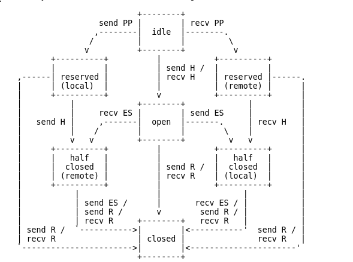

Presentation HTTP/2
by Alexandre Chaouat ©
un protocole chiffre ou non chiffre
- Non chiffre : h2c
- Non gere par les principaux navigateurs
- Sera surement utilise pour du serveur-serveur
- Chiffre par du TLS : h2
Informations generales
Les ports utilises sont les memes que pour HTTP/1
- port 80 pour h2c
- port 443 pour h2
Informations generales
HTTP/2 est un protocole binaire !
Informations generales
Le format d'URI sont les memes que pour HTTP/1
- http://hostname/path pour h2c
- https://hostname/path pour h2c
Initialisation d'une connexion h2c
Envoi d'une requete d'upgrade
GET / HTTP/1.1
Host: server.example.com
Connection: Upgrade, HTTP2-Settings
Upgrade: h2c
HTTP2-Settings: [base64url of HTTP/2 SETTINGS payload]
Initialisation d'une connexion h2c
Si le serveur gere HTTP/2
HTTP/1.1 101 Switching Protocols
Connection: Upgrade
Upgrade: h2c
Sinon il repondra sans prendre en compte les headers
Initialisation d'une connexion h2
- Utilisation de l'ALPN => Application Layer Protocol Negotiation
- Extension TLS pour negocier le protocole utilise apres le handshake
Initialisation d'une connexion h2c avec connaissance prealable
- Environnement maitrise (serveur-serveur par exemple)
- Possibilite de passer directement a l'etape suivante de l'initialisation
Initialisation d'une connexion HTTP/2
- Envoie d'une connection preface
- 24 octets pour le client a envoyer suivi d'une frame SETTINGS qui sera ACK
- SETTINGS frame a envoyer par le serveur qui sera ACK
Optimisation possible
- Le client a la possibilite d'envoyer des frames directement apres l'envoi le connection preface
- Probleme potentiel avec la configuration
- A ne faire qu'en environnement maitrise
La frame
+-----------------------------------------------+
| Length (24) |
+---------------+---------------+---------------+
| Type (8) | Flags (8) |
+-+-------------+---------------+-----------------
|R| Stream Identifier (31) |
+=+===============================================+
| Frame Payload (0...) |
+-------------------------------------------------+
Le multiplexing
- Rendu possible par les streams
- Stream = flux de de frames bidirectionnel
- un stream corresponds a une requete reponse
- Pas les memes problemes que le HTTP pipelining
La frame Header
- Permet d'ouvrir un nouveau stream
- Contient les headers de la requete
- Utilise le systeme de compression hpack
- Divise en fragment
La frame Header
+---------------+
|Pad Length? (8)|
+-+-------------+------------------------------+
|E| Stream Dependency? (31) |
+-+-------------+------------------------------+
| Weight? (8) |
+-+-------------+------------------------------+
| Header Block Fragment (*)...
+----------------------------------------------+
| Padding (*) |
+----------------------------------------------+
La frame Header : Les flags
- END_STREAM
- END_HEADERS
- PADDED
- PRIORITY
La frame CONTINUATION
- Permet d'envoyer la suite des headers blocks fragments
- Aucune frame entre des frame HEADERS et CONTINUATION
Les pseudos headers
- :method = GET / POST etc.
- :path = the request path
- :scheme = http ou https
- :authory = equivalent au Host: de HTTP/1
Hpack
- Possibilite d'encode la value des headers avec un encoding Huffman
- Table statique contenant les headers les plus repandus
- Table dynamique qui se peuple en fonction des requetes
- Possibilite d'envoyer l'index dans la table au lieu du header
- Compression et decompression stateful, dont le contexte est partage
Frame priority
- Permet de fixer les dependances d'un stream par rapport a un autre
- Permet de fixer un poids au stream (attribution de ressources)
Dependance entre les streams
- Un stream peut etre dependant de la completion d'un autre
A A
/ \ ==> /|\
B C B D C
Dependance entre les streams
- Peut etre fixe a la creation du stream
- Ou via une frame priority
Dependance exclusive
A
A |
/ \ ==> D
B C / \
B C
Dependance repriorisation
x x x x
| / \ | |
A D A D D
/ \ / / \ / \ |
B C ==> F B C ==> F A OR A
/ \ | / \ /|\
D E E B C B C F
| | |
F E E
(intermediate) (non-exclusive) (exclusive)
Flow control
- Chaque endpoint est capable de gerer le nombre d'octets que son peer peut lui envoyer
- Cela passe par les WINDOW_UPDATE frame
- Valeur initialement set a 65,535 octets
- Ne concerne que les frame DATA
La frame WINDOW_UPDATE
Elle peut s'appliquer a la connection ou a un stream
+-+--------------------------------------------+
|R| Window Size Increment (31) |
+-+--------------------------------------------+
La frame DATA
Permet d'envoyer du body
+---------------+
|Pad Length? (8)|
+---------------+---------------------------+
| Data (*) ...
+-------------------------------------------+
| Padding (*) ...
+-------------------------------------------+
La frame RST_STREAM
Permet de mettre fin a un stream en cas de probleme
+-------------------------------------------------+
| Error Code (32) |
+-------------------------------------------------+
La frame PING
- Pas associe a un stream en particulier
- Flag ACK
- Plus haut priorite que toutes les autres frames
+------------------------------------------------------+
| |
| Opaque Data (64) |
| |
+------------------------------------------------------+
La frame GOAWAY
Permet d'annoncer la fermeture d'une connexion
+-+-------------------------------------------------------------+
|R| Last-Stream-ID (31) |
+-+-------------------------------------------------------------+
| Error Code (32) |
+---------------------------------------------------------------+
| Additional Debug Data (*) |
+---------------------------------------------------------------+
La frame PUSH_PROMISE
- Permet au serveur de proposer l'envoie de ressources sans demande du client
- Reserve un stream
- Envoie la liste des headers correspondant a la requete
- peut etre desactivable
- peut etre cancel par le client
La frame PUSH_PROMISE
+---------------+
|Pad Length? (8)|
+-+-------------+-----------------------------------------------+
|R| Promised Stream ID (31) |
+-+-----------------------------+-------------------------------+
| Header Block Fragment (*) ...
+---------------------------------------------------------------+
| Padding (*) ...
+---------------------------------------------------------------+
La frame SETTINGS
- Envoyer dans le connection preface, puis quand on veut
- SETTINGS_HEADER_TABLE_SIZE : default 4096
- SETTINGS_ENABLE_PUSH : default true
- SETTINGS_MAX_CONCURRENT_STREAMS : default unlimited
- SSETTINGS_INITIAL_WINDOW_SIZE : default 65535
- SETTINGS_MAX_FRAME_SIZE : default 16384
- SETTINGS_MAX_HEADER_LIST_SIZE : default unlimited
- flag ACK
La frame SETTINGS
+-------------------------------+
| Identifier (16) |
+-------------------------------+-------------------------------+
| Value (32) |
+---------------------------------------------------------------+
Cycle de vie des streams
